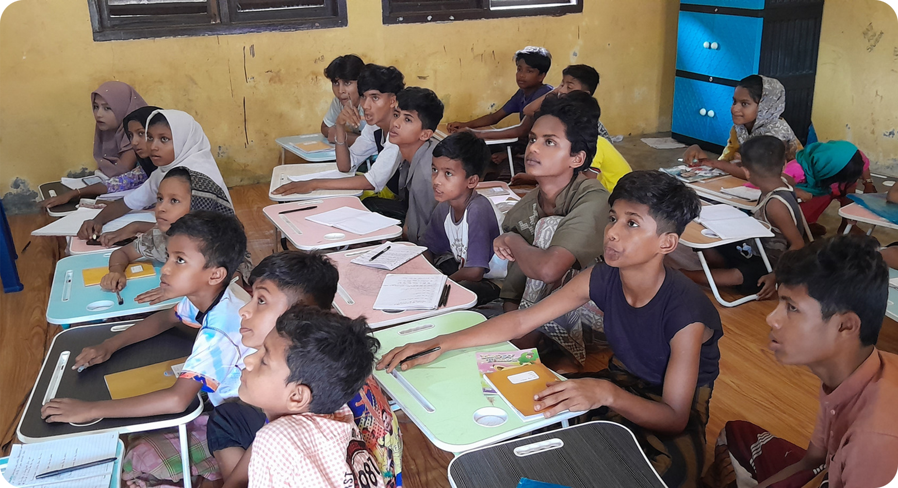
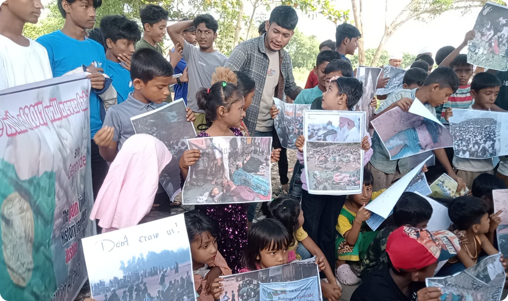
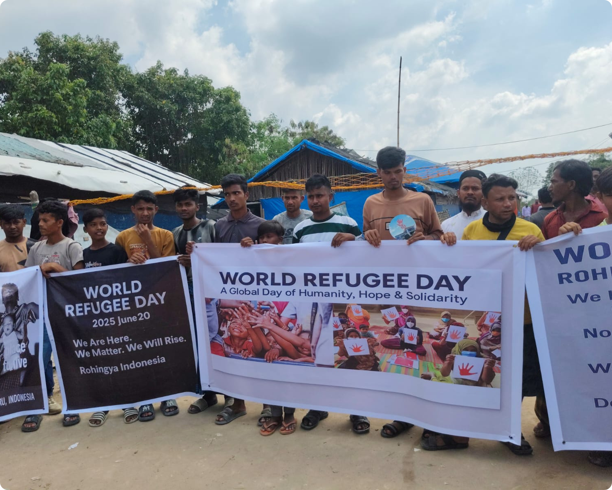
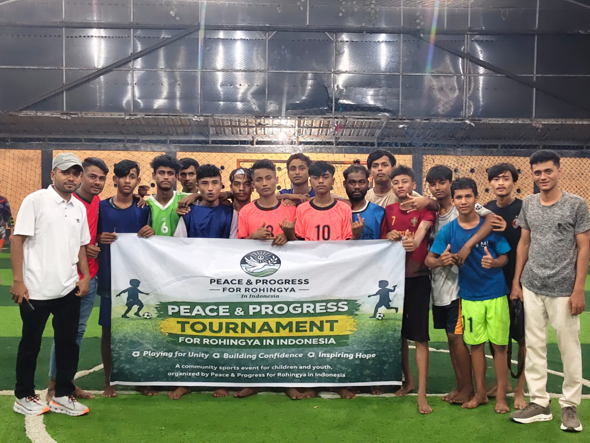
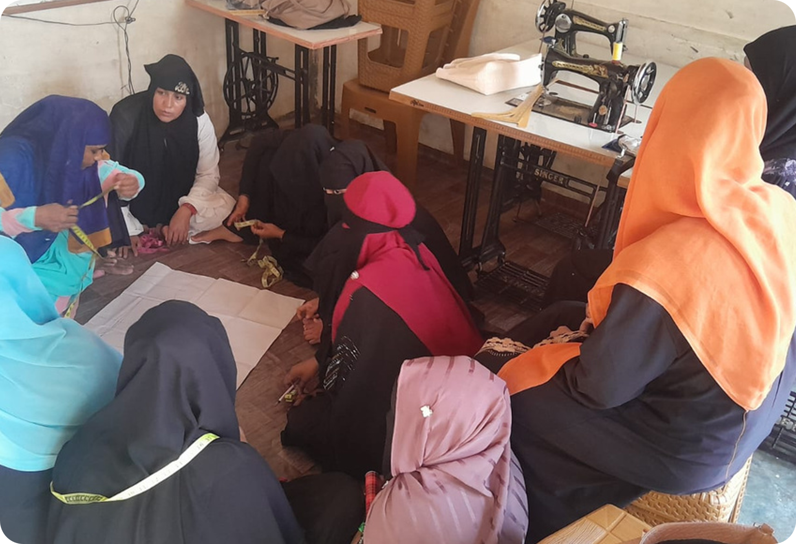
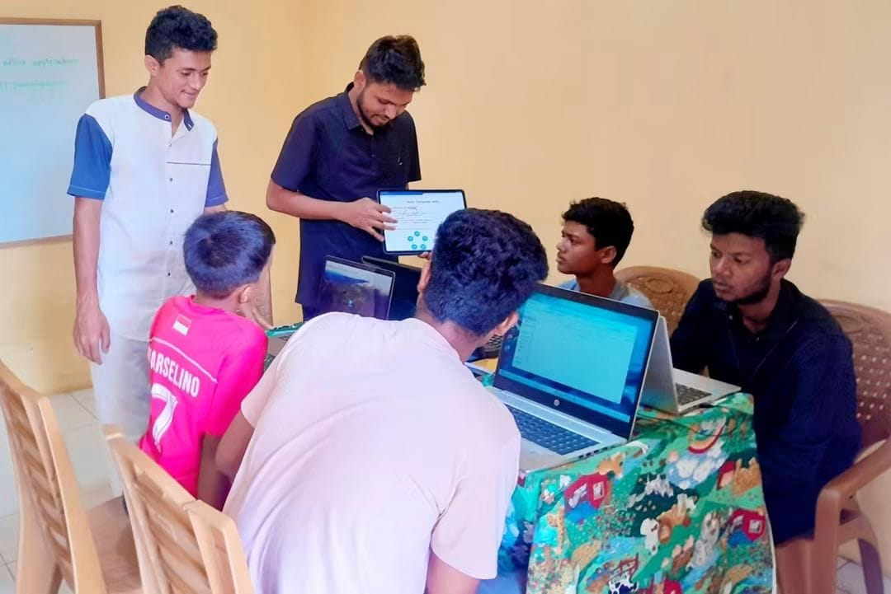
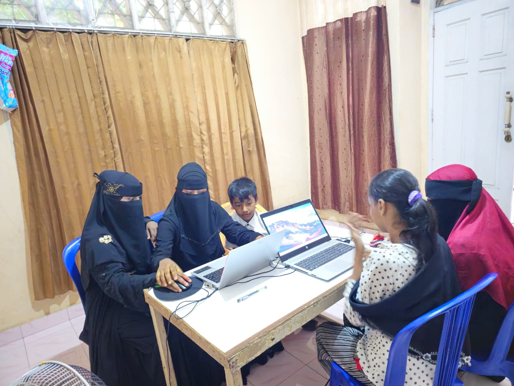
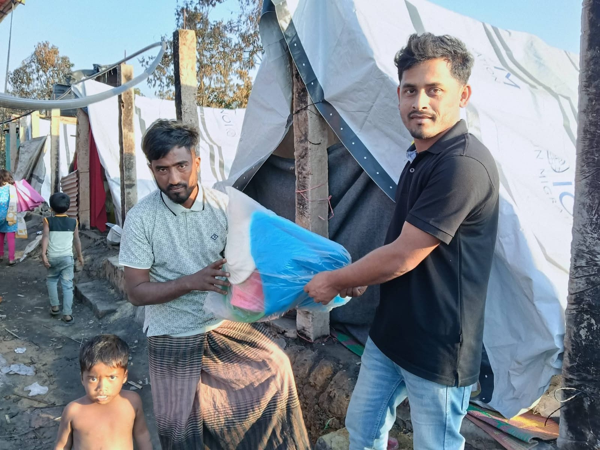

Teacher Support
Supporting teachers and community education initiatives.
Highlights of PPR's education, community, youth, women, advocacy, and humanitarian activities.

Since 2023, PPR has supported education and learning opportunities for Rohingya children and youth.
The organization has worked on educational activities, learning materials, teacher support, and community-based learning initiatives.

PPR organized community activities connected with Rohingya Genocide Remembrance Day to preserve historical memory and raise awareness.
These activities provided an opportunity for community members to remember those affected by the Rohingya genocide and discuss the importance of dignity, peace, and human rights.

PPR participated in community activities connected with World Refugee Day, creating opportunities for Rohingya refugees to come together and raise awareness about refugee experiences.
The activities focused on community participation, dignity, unity, and awareness.

PPR has developed activities that encourage Rohingya youth to participate in education, leadership, sports, and community activities.
These programs aim to strengthen teamwork, leadership, positive participation, and community unity.

PPR has supported sewing and skills development activities for Rohingya women and girls.
The program provides opportunities for participants to develop practical skills and strengthen their confidence and participation in the community.

PPR has organized activities for Rohingya children that support learning, participation, creativity, and positive community engagement.
Activities have included educational and recreational programs designed to create safe and positive opportunities for children.

PPR developed a digital literacy program to help Rohingya youth build practical computer skills.
Training activities include Microsoft Word, PowerPoint, Excel, Canva, and basic digital skills.

PPR has supported Rohingya refugees affected by emergencies and other humanitarian challenges.
Community support has included assistance for vulnerable families, emergency situations, and people facing difficult living conditions.
PPR works to increase awareness within the Rohingya community about education, human rights, peace, leadership, and community participation.
The organization also works to preserve Rohingya identity, history, and community awareness through peaceful activities and public engagement.
PPR also supports practical activities that bring community members together.
Supporting teachers and community education initiatives.
Supporting access to educational materials and learning resources.
Encouraging youth participation, teamwork, sports, and leadership.
Creating opportunities for women and girls to develop practical skills.
Organizing activities that promote unity, awareness, and participation.
Supporting vulnerable community members during humanitarian needs.
PPR continues to work with Rohingya community members to promote education, leadership, dignity, peace, and mutual support.